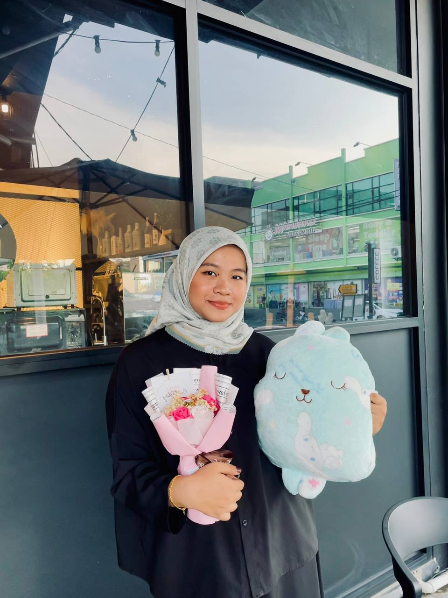

・₊✧ FATIN'S PERSONAL WEBSITE ♡₊˚
Hello everyone! My name is Nur Fatin Insyirah Binti Mohd Faizal, and I’m thrilled to welcome you to my little corner of the internet. I’m 20 years old, born on the vibrant day of May 7, 2004. Currently, I’m pursuing my final semester in the Diploma of Information Management at UiTM Segamat, where every day brings new challenges and growth. I hail from the bustling town of Pasir Gudang, Johor, and I couldn’t be more excited to share a glimpse of my life, passions, and experiences through this blog. So, grab a cup of coffee (or tea!), and let’s dive into this journey together! 🌟
